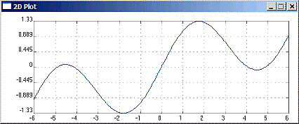
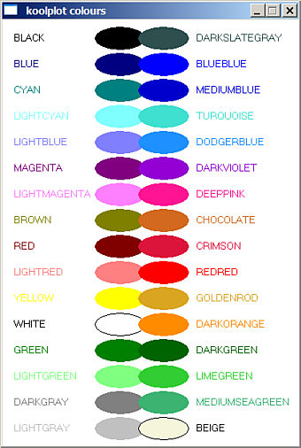

This simple software library can be used by either C or C++ programs to plot two-dimensional graphs.
To use koolplot with Quincy, create a koolplot project, then insert your program file(s) into it (right-click with the mouse in project window).
This document describes the C koolplot interface.
|
 |
The C program above displays the curve on the right in a small window. Clicking the mouse with the cursor on the graph places a marker at the cursor location and displays the marker coordinates. The window closes when any key is pressed.
__________
|
plotdata
The main data type used in koolplot is plotdata. It is in fact a C++ class, but it hides it well. It can be easily used within C programs as any other C data type.
A plotdata variable can hold any number of data points (double values) for the purpose of plotting graphs. One special value (called NOPLOT) receives special treatment and is never plotted onto graphs.
plotdata initialisation, insertion, deletion and assignment:
* A plotdata variable can be declared and initialised at one go by giving it a range in the declaration as in line 1 of the above program:
plotdata x(-6.0, 6.0);
This defines the range of x data as being between -6 and 6. It creates automatically a large number of data points spread evenly within the range.
Note: Always disambiguate floating point number literals by using a decimal point in initialising plotdata ranges. This avoids occasional problems with the GCC compiler getting confused.
* Initialisation can also be done during declaration by using an existing array of double values valArray, and the number numToInsert of values to obtain from the array:
plotdata x(valArray, numToInsert);The data points inside the array must be ordered as they will be joined in the order inserted during plotting in order to form the curve.
* An array of double type values can be inserted into a plotdata variable pdata (appended to the existing data if any) with:
insert(pdata, array, numberToInsert);
Of course array may contain more elements than numberToInsert, but not fewer.
* Individual data points may also be appended to a pdata plotdata variable with:
point(pdata, doubleValue);
Note: To save typing you can use the << operator to append points to a plotdata variable. (This looks more like C++ than C, but it saves a fair bit of typing, especially since this insertion operator can be concatenated.
)
example:
pdata << doubleValue << 1.2 << p << 0.006; /* insert doubleValue, then 1.2, then p.. */ * plotdata variables may also be concatenated using the << insertion operator:
plotdata x(-90, 90), y = sin(x * (M_PI / 180)), z = cos(x * (M_PI / 180));
x << x; // duplicate the data within x
y << z; // append z data to y plot(x, y); // plot both sin x and cos x
* A plotdata variable can be wiped clean by using the function:
clear(pdata);All data within pdata is removed (pdata is now un-initialised and cannot be an argument of an expression until re-assigned new data).
* A plotdata variable may also be assigned the result of an expression containing other plotdata arguments that have been initialised before:
plotdata y = sin(x) + x/5; /* where x is another plotdata variable */
Expressions
plotdata variables can appear as arguments of mathematical expressions involving a mix of initialised plotdata variables and floating point numbers or variables (double, or float). The result of such expressions is always a plotdata value.
operators and brackets
All the usual arithmetic operators (+ - / *) may be used and have their normal order of precedence. Brackets may be used as normal to clarify the order of interpretation.plotdata variables can appear as arguments of all the usual mathematical functions:
Trigonometric functions - sin, cos, tan, asin, acos, atan.
Hyperbolic functions - sinh, cosh, tanh.
Logarithmic functions - log, log10, exp.
Power functions - pow(pdata, exp), where the plotdata pdata is raised to the double power exp.
Square root function - sqrt.
Absolute value function - fabs
User-defined functions
Programmers can install and plot their own user-designed functions.
* User-defined functions can be unary functions "f" (with one double argument and returning a double value). In the call to f() the argument is a plotdata variable, for example:
plotdata x(-6.0, 6.0);
f(x) = sinc; /* installs sinc() as a function of x returning a plotdata. */
plot(x, f(x) * 2); /* Plots the graph of sinc(x) * 2 from -6 to 6 */
sinc() is a function often used in science and engineering. It would be declared by the programmer as:
double sinc(double x);
* User-defined functions can be binary functions "f2" (with two double arguments and returning a double value). In the call to f2() the first argument is passed a plotdata variable, the second a double value, for example:
x = plotdata(-270.0, 270.0);
f2(x) = tanLessThan; /* Installs tanLessThan as the function f2(x) returning a plotdata */ /* Do not plot values greater than 20 */ plot(x, f2(x, 20));
tanLessThan() is a user-designed function that returns values of tan(x) less than the second argument max. If tan(x) is larger than max, then NOPLOT is returned instead (this is done because tan(x) grows very quickly towards infinity and could not be plotted). Values equal to NOPLOT are not plotted by koolplot.
The function tanLessThan() could, for example, be declared by the programmer as:
double tanLessThan(double x, double max);__________
Plotting Graphs
A call to the plot() function will open a small window and draw a 2-dimensional graph:
plot(xAxis, yAxis, colour, label);
..where xAxis is the plotdata variable containing horizontal axis data points, yAxis is the plotdata variable containing the vertical axis data points, colour is the graph colour, label is a string containing the caption to print on the window header.
colour and label are optional. One or the other may be given, or none, or both. When they are not given, default values are used. The graph colour will be green, and the caption will be "2D Plot".
Note: Optional function parameters are not allowed in C. This extra feature is available here due to the fact that the koolplot library is written in C++, even though it can be used by C programs.
koolplot colours:
The following identifiers are defined as koolplot colours usable in graphs (see the actual colours opposite). Standard BGI colours available are: and extra web colours useful in graphs: |
 |
__________
Plotting Multiple Graphs
A single call to the plot() function can draw more than one graph. For example to draw both sin(x) and cos(x) over the range -315 degrees and 45 degrees:
plotdata x(-315.0, 45.0), y = sin(x * M_PI / 180), z = cos(x * M_PI / 180); breakplot(x, y); // Ensures that the first graph is not linked to the second x << x; // duplicate the data within x
y << z; // append z data to y plot(x, y); // plot both sin x and cos x over the same range
* Function breakplot(x, y) inserts noplot values into both plotdata variables. This ensures that the graph will be broken at that point. In this case, the end of the sin x graph will not be linked to the start of the cos x graph by a meaningless line.
__________
Plotting Multiple Colours
* Function setColor() allows displaying multiple graphs in different colour
plotdata x(-45.0, 45.0), y = sin(x * M_PI / 180), z = cos(x * M_PI / 180); setColor(x, y, CRIMSON); // breaks the plot and changes the colour x << x; // duplicate the data within x y << z; // append z data to y plot(x, y); // plot both sin x and cos x over the same range
In this example, sin x will be drawn in green (the default colour), cos x will be red.
__________
Plotting Individual Data Points
* Function addMark() adds individual data points (not linked to the graph).
The data point appears as a small circle centred on the given coordinates. The call is:
addMarx(x, y, xCoord, yCoord);
where xCoord and yCoord are the coordinates of the data point to be displayed on the x, y graph.
__________
Controlling the Axes
koolplot automatically constrains the axes to the exact range of the graph. This is sometimes inconvenient as the markings on the axes end up with large decimal values.
Two functions are provided to extend the axes span:
axesBotLeft(xData, yData, minX, minY); // minX and minY are the new minimal axes valuesenables extending the bottom left corner of the axes (downwards and left-wards, away from the graph).
axesTopRight(xData, yData, maxX, maxY); // maxX and maxY are the new maximal axes valuesenables extending the top right corner of the axes (upwards and right-wards, away from the graph).
- Sample programs using koolplot are available in the Quincy Help->Example Programs menu.